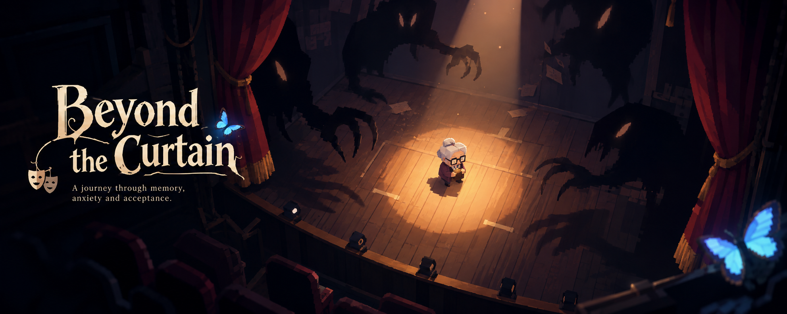

I build worlds, systems and the tools behind them.
Game Developer · 3D Artist · Game Designer
I work across code, visuals and design to turn ideas into playable experiences.
AREAS
Game Dev
Unity systems, technical art, editor tooling, world building and gameplay development.
↗3D Art
3D modeling, environments, stylized assets, materials and visual studies.
↗Game Design
Mechanics, systems, level flow, player experience and documentation.
↗Narrative Design
↗Game Production & Communication
SELECTED WORK
A few projects before diving deeper.
 LONG-TERM PROJECT / CASE STUDY
LONG-TERM PROJECT / CASE STUDY
Vitis: A Wine Country Tale
Vitis: A Wine Country Tale is a long-term Unity project centered on building a stylized world inspired by the Italian countryside.
View case study ↗ GAME JAM / NARRATIVE PUZZLE
GAME JAM / NARRATIVE PUZZLE
Remember to Wait
A short first-person puzzle-narrative experience about the tension between rushing and waiting, created by Raccoon Interactive during a 48-hour game jam.
View case study ↗ LAB PROJECT / GAME DEVELOPMENT
LAB PROJECT / GAME DEVELOPMENT
No Light Off
A first-person horror laboratory project where light, battery, sanity and repair systems create continuous pressure on the player.
View case study ↗
NARRATIVE DESIGN / INTERACTIVE STORYBeyond the Curtain
A branching narrative exercise built around Imma, an elderly protagonist whose emotional state changes dialogue, interaction and perception of the world.
View case study ↗